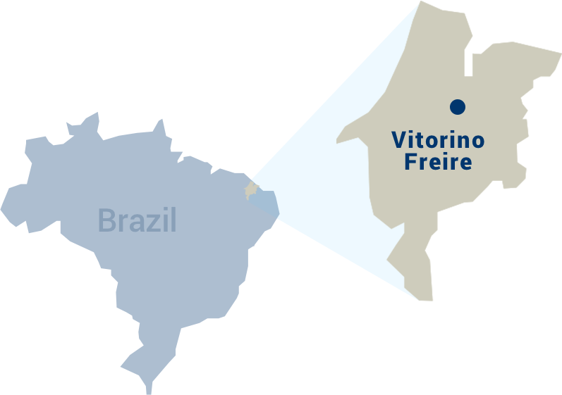
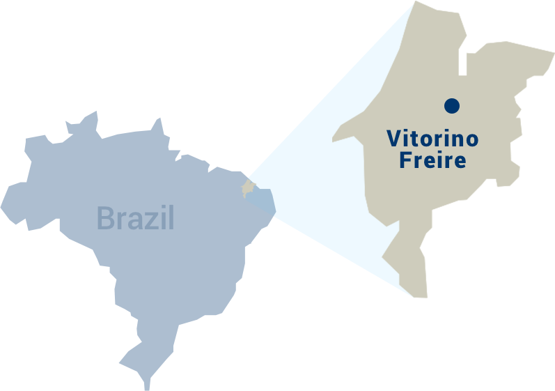

2 years old
Vitorino Freire, Maranhāo, Brazil

Through the help of Compassion, in partnership with the local church, Rosilda and her children have hope for a much brighter future. And that’s something that didn’t seem remotely possible not that long ago.
To this day, Rosilda thinks about the decision she made 12 years ago, when she became pregnant as an 18-year-old. At the time she was unmarried and lived with her father, a man with a history of violence. Fearing for the safety of both herself and her unborn child, she moved to another city for the duration of the pregnancy, where a combination of despair and hunger ultimately led her to make the most difficult decision of her life: giving up her baby for adoption. “I didn’t want to see my baby starve,” she said, “and I decided to leave him at the hospital and let them find a family for him.” The voice of the 30-year-old starts to quiver as she holds back tears. “I regret every single day.”
 

Rosilda has since returned to her hometown of Vitorino Freire, but rebuilding her life has been a struggle to say the least. The children she had while she was away – Morgana, now 2, and Dheric, now 3 months – are from two different men, both of whom dropped out of the picture immediately. So she’s been alone, afraid and depressed from the moment she became a mother.
But then Compassion came into her life and everything changed.
Up to that point, she was lacking both the basic necessities (like diapers and clothing) and social support (she was alienated from her family and too discouraged to even talk with her neighbors) to raise her kids properly. Her situation, while heartbreaking, was very much the norm for mothers enrolled in Compassion’s Child Survival Program (CSP) at the local church, so the volunteers knew exactly what needed to be done in order to help Rosilda support her family.

Immediately, they provided Rosilda, Morgana and Dheric with all their basic needs. Then, after lifting that enormous weight from Rosilda’s shoulders, they gently invited her to attend some of the lectures and courses that the program offers, where she ended up finding a community that offered support, guidance and companionship. What she treasures most today are the church’s home visits, one of the pillars of the program. During these visits, program facilitators give the mothers personal lessons on a wide range of topics, from prenatal education and nutrition to God’s love and the importance of prayer. “I can talk openly, ask questions. They give me ideas, they teach (me) personally.”
All in all, the program has been instrumental in helping Rosilda move past her depression, building up her confidence as both a mother and a person. She now talks regularly with her neighbors, volunteers at the CSP, attends the partner church activities and sees to the needs of both Morgana and Dheric. She’s also learned to look towards the future instead of being stuck in the past. “I don’t know where I would be at this point of my life without the program’s help,” she says. “I’ve got my 2 children, my treasures, and I love them. I needed strength to carry on – and Compassion helped me find that strength.”